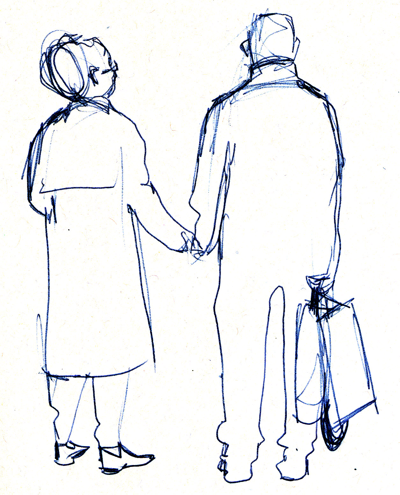
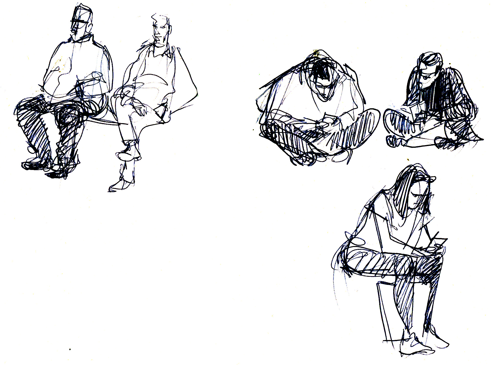
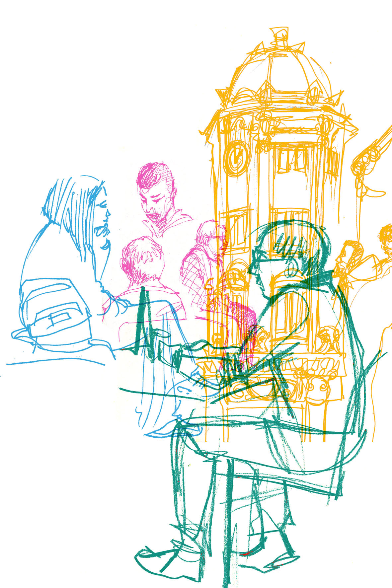
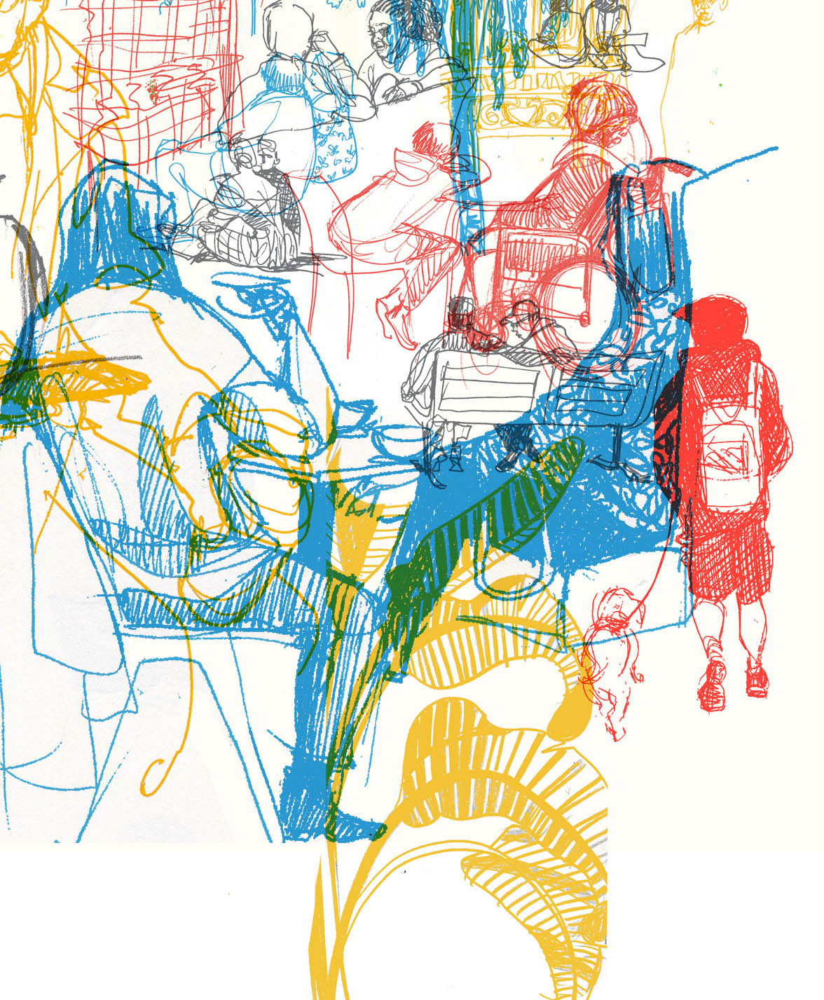
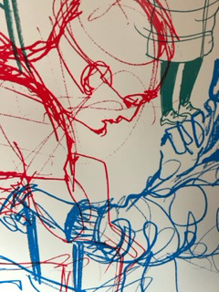
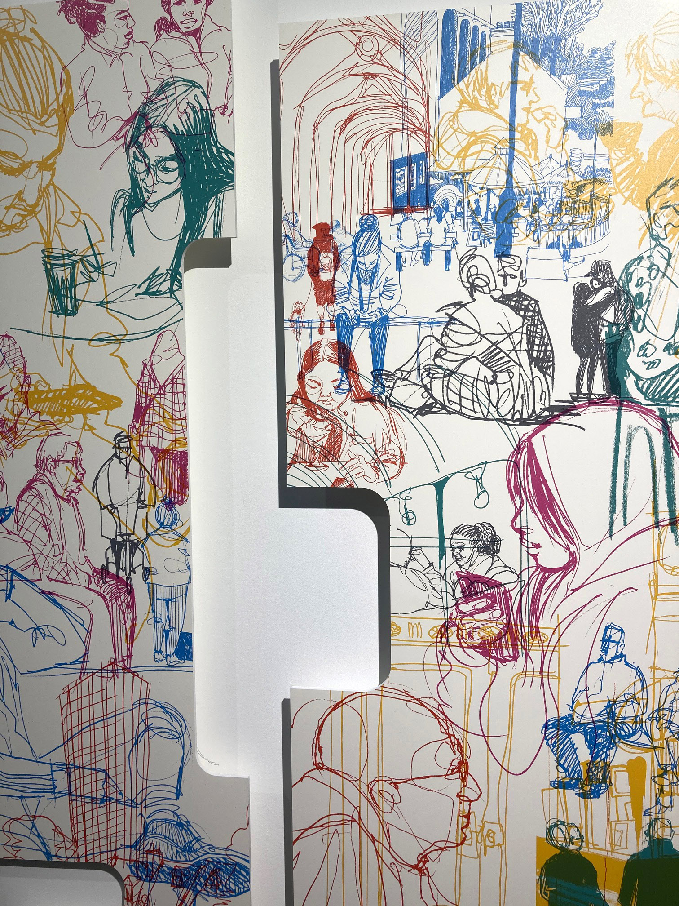

Abstract
This article examines a practical artist project engaged in drawing on (and in, with, and about) everyday life in an artwork specifically engaged with ideas of representation and authenticity, when making context-specific and place-based portraits for a publicly commissioned artwork to be installed in a public setting (train carriages) which is both place and non-place. This work considers both the tactical (‘rules of engagement’) and ethical considerations that had to be considered by the artist, and the differing ways in which this artwork can be considered as authentically place-based and representational, both of the people in the portraits and of the region which was the situated frame of the work; in other words, as a piece of public artwork which is fixed (physically installed), mobile (the installation is moving), and random (passengers do not know when or if they will see the particular artwork). Here, the artist needed to consider what concepts such as realism, self-presentation, and ethics meant in terms of representation, in creating a work designed to reflect a situated audience back to itself. The work becomes a palimpsest of form and concept rather than of history.
Keywords
Introduction
In January 2022, Nexus, the operator of the Tyne and Wear Metro, announced a major arts commission open call for the system’s new £362m train fleet of 46 new Metro trains. The commission1 marked the first time in the world that permanent, large-scale contemporary art was commissioned specifically for the inside of new passenger carriages across an entire urban transit system. The artwork itself would need to fit the specific dimensions of the carriage panels, floor to ceiling at either end of the train carriages. Each of the designs would be featured 23 times throughout the fleet, potentially being seen by up to an estimated 35 million metro train passengers annually for at least the next decade.
The aim of this article is to reflect on the artistic practice carried out in response to an illustrative brief, the context of which was to capture a sense of the ‘everyday life’ of the region of the North East of England. The artist’s intention was to capture a visual representation of everyday life in and around the region, with a specific focus on locations connected to and reachable by the Metro train network. This decision was made based on the intended format of the artwork, which was to be a longstanding exhibit within the train carriages themselves. The artist, Sara Gibbeson, felt strongly that including people, as well as inanimate objects such as buildings and backdrops, within this visual representation was of utmost importance when attempting to capture a sense of the places being explored. The purpose of this reflection on practice is to explore the ways in which Gibbeson needed to consider what concepts such as realism, self-presentation, and ethics meant in her practice, in terms of representation, in creating a work designed to reflect a situated audience back to itself. The main focus is the ethical tension between drawing people without their knowledge or specific permission, considered against the project brief of capturing and re-presenting something authentic about the people and the place.
A Sense of Place
The theme of the artist callout was to capture a ‘Sense of Place’. Gibbeson, as one of the final four practitioners commissioned2 to create the final artworks, reflects on the process of creating work for a public art commission using observational drawing as a method of capturing and recording a representation of everyday contemporary life, for, in, and about a site that was place-based, but also mobile and randomly experienced (the viewer does not know in advance what artwork will be on the train on any given journey).
The first task was to define the ‘place’. As Yi-Fu Tuan (1977, p. 136) points out, “Space is transformed into place as it acquires definition and meaning.” In this case, the term ‘place’ was multilayered, and tensioned with questions around representation of both people and a place – the north-east of England – that has at times felt unrepresented, or represented in a negative way by outsiders but which has a strong sense of its own self. The main aim of the work was to create artwork that offered a sense of the ‘spirit’ of the places visited through several intangible aspects such as busyness, movement, interaction, connection, and character. Many elements of art and design hierarchy principles were employed to do this, including scale, texture, line, space, colour, form, and shape. It was also important to Gibbeson to represent the diversity of the population as much as possible and to explore a range of locations that represent provincial areas of the region as well as the more cosmopolitan city centre spaces.
Another layer of interest in the sense of place for the commission was that train carriages can be conceptualised as ‘non-places’, constantly reconstituting and rewriting identity and relations (Augé, 1995, p. 79). Despite being a ‘non-place’, the Metro represents connection, not just in the sense of being a practical mode of transport enabling citizens to travel from one place to another, but also in terms of how we share a space as we move about and live our daily lives. We might catch up with friends, read a book on the way to work, have an unexpected conversation with a stranger; we might gesture to give up a seat or sit quietly with our thoughts as we watch the world flash by – all from the comfort of a warm carriage. The challenge for Gibbeson was in creating a sense of the everyday life of the North East within the non-place of the carriages in her artwork, an interesting engagement with local identity and representation.
Gibbeson’s idea for this commission was to capture a sense of place by drawing the people and places of the region reachable on the Metro network: fellow passengers, as well as people going about everyday life in various locations in reasonable proximity to the metro stations. Her intention was to depict a visual representation of the diversity and spirit of the region by illustrating its residents and visitors within community-based settings. As Kwon (2002, p. 96) notes, a subject “is best accomplished when the…subject of the art work…is the community itself in some way.” The word community can reflect both a feeling and a set of connections or affiliations between people, and in trying to identify a kind of ‘spirit of place’ in the drawings, Gibbeson was trying to portray both of these aspects; both the social and the spatial organisation originally centred around the Metro and the places connected by the Metro, and the people who used it.
The mode of documenting a fleeting snapshot of life would be through the act of observational drawing3. Gibbeson’s creative practice is underpinned generally by drawing in sketchbooks from life, on location; these methods were the primary process used to explore, observe and record everyday life. The fieldwork was carried out over several weeks between February and April 2022, often at weekends. Gibbeson spent these weeks drawing people and places in a series of sketchbooks. She chose to cover the main wards of the region, North and South Tyneside, Gateshead, Sunderland and Newcastle, travelling to these locations by metro and initially setting herself the unwritten rule of only drawing on the trains themselves and within a small distance away from the metro stations. However, she later decided to go further afield (always on foot and within reasonable walking distance from the stations), to observe more provincial and diverse socio-economic settings. For example, the locations ultimately included busy city centre squares, small independent markets, various high-street locations, parks and piazzas, seaside areas and urban communities situated on the outskirts of larger towns/cities.
An aspect of this practice Gibbeson deemed important was to draw from life rather than from photographs, memory, or imagination. Gibbeson’s aim was to create a collection of drawings ‘in the field’ that would serve as the raw material needed to create a series of montages of everyday life. By purposely avoiding featuring well-known landmarks, and instead aiming to work in lesser-known locations and settings, and by including different groups such as metro passengers, people spending time in a city centre square, people chatting outside a pub, people shopping in a market and shopkeepers in their place of work, she hoped that the drawings themselves would be affected by the conditions in which they were created. Factors such as movement, weather, or unforeseen changes in subjects and locations would all have an impact on the sketches themselves, with the intention that this would result in drawings that felt lively, gestural and full of character, and which captured a sense of the atmosphere of everyday life, creating an authentic picture of the people of the region4, using line, tone, and a limited colour palette.

Drawing as Fieldwork: Observation, Representation and Process
Gibbeson’s illustration practice is underpinned by drawing with traditional, physical materials to communicate ideas, messages and stories. As part of her practice, she began drawing almost daily in sketchbooks some years ago.5

She notes that as an art student she wanted to create accurate representations of the world around her, making sure her technical drawing skills were at a decent professional level. However, she began to realise that her role as an illustrator was to do more than just reflect an exact copy of the scene in front of her: it was to communicate more in-depth aspects of a visual story to the audience, such as a sense of atmosphere, movement, mood or feeling. Early in her career she spent a great deal of time attempting to retain and translate the liveness and immediacy of her sketchbooks into final outcomes. Failing to see the value of these ‘unfinished’ sketches, she would often over-render drawings, with each iteration and refinement removing the ‘pentimento’ of the original sketch. She learnt over time that maintaining inaccuracies and less refined qualities of a drawing would become a strength of her work6. For this project, she wanted to avoid amending and refining to retain a sense of immediacy within the quality of line when drawing out in the field.
Gibbeson’s preferred reportage drawing tools include pencil, pen, inks, dip pen and brushes. The dry media enable her to work swiftly with a degree of control and precision. They provide a varied line weight and a mix of grainy and smooth textures. The ink and dip pen are more difficult to control and more unpredictable, but it is the nature of these tools that often results in the liveliest drawings. As Berger writes, ‘we who draw do so…not only to make something observed visible to others, but also to accompany something invisible to its incalculable destination’ (Berger, 2010, p. 43). The unpredictability adds a sense of movement and character to the drawings due to the less accurate rendering.
Several factors can affect the way marks are made on the page when drawing from life. Being distracted by noise and busyness, the wind catching a sketchbook page, the speed at which a drawing is created, sketching a constantly moving subject, a person disappearing out of view and so on: these factors add a certain liveliness and spontaneity to a drawing and enable Gibbeson to bring an expressive, gestural quality to the work. It felt important that the drawings included in the final piece maintained the spontaneous sketchy lines captured at the time and remained relatively unchanged.
Ethical Considerations in Observational Drawing
“…a vigilant reflexivity on the part of the artist is essential” (Foster, 1996, cited in Kwon, 2002, p. 130)
Another aspect of the project that brought considerations to be addressed was about the way Gibbeson interacted with and involved the people she was drawing. She wanted to create a unique interpretation of everyday life in her own artistic handwriting but also to remain true to the people being depicted, while capturing an atmosphere or mood of the moment inspired by the people in the scene. The very nature of drawing in ‘real time’ meant that some drawings would be more accurate than others. Some figures would be more recognisable than others, but unlike a photograph, a sketch of a person is more likely to be open to interpretation and less easily identifiable. This is important in an artwork which is layered in terms of its representational engagement and expression, and can perhaps best be articulated with Erving Goffman’s examination of how the self is presented in everyday life (1959).
Goffman used the metaphor of performance to analyse how people present and represent themselves in different spaces. If the first space is the domestic arena, the home, and the second space the civic arena, where people engage publicly in culture, then the third space can be described as a sort of middle ground of self-definition (Tatham, 2025). Goffman suggested that the self emerges through a performance: there is a self that is continually being constructed through interaction. There is a setting – a kind of stage – which in this case consisted of the locations where Gibbeson chose to draw her subjects, and which included the Metro itself. There is also what is called appearance: visual cues that help identify what kind of performance is occurring, what kind of character is being presented. Clothes, hairstyles, physical features all contribute to this. Thirdly, there is manner: the way in which someone signifies what kind of performance will take place. This can be through an air of confidence, for example, or an aggressive posture. Often, when in situations in which they know they are being observed, people will engage in impression management, where they try to present a more or less idealised version of themselves. This is not insincere; however, when people are not actively engaged in impression management, when they are in more of what Goffman termed a backstage environment, they are more like their ‘true selves’, and they appear more authentic. It was this version, rather than an idealised performance, that Gibbeson wished to capture. But this approach required self-reflexivity and sensitivity on the part of the artist, and ultimately forms her contribution as an artist to Goffman’s theory of the presentation of the self when knowingly observed and when not.

Most of the time when Gibbeson sketches people on the metro or in a café, they don’t notice that she is drawing them. She doesn’t hide the fact that she’s drawing, but she works in quite small sketchbooks, so it is not always obvious that she is drawing. She often draws aspects of the décor or surrounding architecture as well and tends not to focus heavily on one individual for a prolonged length of time. On occasion people do notice that she is drawing them, or they notice that she is drawing other people or surroundings. She has never had a negative reaction to being ‘discovered’ in this way. In fact, most people are enthusiastic and want to talk to her about her practice. Others will ask her to draw them, which she happily does and then usually gives them the drawing at the end. For the metro commission, she went about it in the same way, working in an A4/A5 sketchbook held in her hand or balanced on her knee with pen or pencil.
Most ‘urban sketchers’ are primarily concerned with the desire to capture people who don’t know that they are being observed, but at one point Gibbeson started to worry about drawing people without their knowledge, and considering the drawings could end up in an artwork from which she was making financial gains. The urban sketcher, or reportage illustrator, is essentially free to observe, and faithfully depict people, in ways that would disrupt the expressive order. Gibbeson is careful not to do this in several ways: many are presented from behind, for example, or half turned away, pensive.
She noted, “There was one instance when I sat on a bench outside and began drawing a man busking. I enjoyed listening to his music and drawing him while he played, but when he stopped performing, I remember thinking he looked downhearted and sad. Suddenly I felt uncomfortable drawing him, as if it was an invasion of his privacy. I abandoned the sketch at that point and did question my methods. Is it an invasion of a person’s privacy to draw them without their knowledge?”7

As an attempt to address these ethical concerns, Gibbeson decided that she would experiment by asking people’s permission before drawing them. Everyone she asked said yes, and all were enthusiastic about the project. However, this led to another question around the methods of capturing everyday life. Once people became aware that she was drawing them, their whole posture, body language, and demeanour changed. They seemed to become less relaxed and naturalistic in their stance, more conscious of how they were holding themselves and almost began to pose as if for a photograph.
In response Gibbeson would feel she had to draw as quickly as possible so as not to take up too much time. Whereas previously drawing at speed added a deftness of line, in this instance she seemed to become more precious or self-conscious, and the increased speed resulted in the drawings taking on a more static appearance, less expressive, with a heavier and less gestural quality of line. These drawings were far less appealing than those she made while a person passed by or carried on going about their business. None of those drawings made the final cut.
The unexpected insights were around the question of ethics when drawing people while they go about their daily lives, unaware that they are the artist’s subjects, and whether there are instances when the artist should refrain from doing this. If social reality is something people actively construct through interaction, what is happening when interaction and reciprocal obligations are hidden or unmoored? Thinking about representation and authenticity encapsulates the nexus of these questions.
Gibbeson felt strongly that the work fulfilled the creative brief better when people were drawn loosely and in passing without an awareness of the artist’s work, but it also led to the question of ethics around how we record others in a public space. Was there a risk that this could stray into the realm of invasion of privacy, for example?
Several methods were employed to address this question. For example, Gibbeson chose to draw people from a variety of angles such as side or back views, so there were fewer identifiable features recorded. The sketchy, loose style of drawing also meant that even if full faces, recognisable clothing and possessions were captured, the nature of the drawings, the lack of realism and the imagined colours meant that it would be difficult, if not impossible, to identify individuals from the resulting artwork.
Gibbeson conducted a series of informal experiments by asking people in various locations if they would be happy to be drawn. Although all the people in this group were indeed happy and enthusiastic about being included in the sketches, Gibbeson decided that the quality of these drawings was diminished, due to the more stilted or static nature of the sketched lines. This seemed to be caused by two main factors: the way in which the subjects adjusted their body language, appearing to physically ‘hold’ themselves differently when they were aware they were being drawn, and an increase in anxiety on the part of the artist, including a sense of perceived pressure and scrutiny she felt regarding the level of accuracy or realism, as if there was an expectation that they were creating a ‘portrait’ rather than capturing a more impressionistic depiction of the subject.
In contrast, the drawings that were created over time, while the artist situated herself within everyday community life (for example as a passenger on a train, as a customer in a café or just another person enjoying a communal green space), had a more gestural and lively quality that was a more appealing and interesting depiction of the people and places encountered.
From Sketchbook to Train Carriage: Composition and Production
‘There is a symbiotic desire to get closer and closer, to enter the self of what is being drawn, and simultaneously there is the foreknowledge of immanent distance’ (Berger, 2015, p. 174)
Lin (2025, n.p.) notes that “…art in the community serves as a cultural exchange point…Public art serves the purpose of giving cities a voice to express their values as well as giving them space to challenge social norms…a language through which communities argue about…how they would like to be viewed...” Aware that the many complex aspects of a community – in this case the geographical community of the North East, in all its breadth of experience, cultures, incomes, ages, and so on – cannot easily be depicted by drawing alone, and that the true diversity of the people living across the region would be impossible to capture fully in one final image, Gibbeson created an authentic picture by capturing the nuanced similarities and differences of the people she saw during her field trips and used these reportage-style drawings directly in the final artwork.
After several weeks, she had created an abundance of sketches of a variety of people with some buildings and natural surroundings included. The next task was to compose ideas for the final artwork, which was a rather unusually shaped canvas dictated by the shape of the train carriage end walls.

The panels were three separate floor-to-ceiling pieces8. One of the ideas Gibbeson began to consider as she brought together her drawings in digitally layered compositions was the question of creating a narrative within each of the panels. For example, she explored separating the three panels into different environmental scenes such as the seaside, a busy city centre, and a park. She also wanted to explore other visual hierarchy principles, such as scale, space, colour, proximity and line. She created several ideations that were not based on any theme but were instead intuitively led by the components of the composition itself; what ‘felt’ most visually balanced. She decided to use different colours on the linework, mainly so that the drawings could be layered and retain clear delineation/differentiation; this also referenced metro and tube maps that use colour to define different routes and journeys.

The drawings collected during the fieldwork sessions were used in a process of development, iteration and experimentation in which Gibbeson worked through a process of composing layered, digital collages from the raw sketches. She decided to refrain from correcting or manipulating the drawings so that they remained true to the moment in which they were created. This meant including all the working developmental lines, mistakes and underdrawings within the final images. She carried out a process of exploration and ideation around creating an imagined narrative within the final panels, grouping certain drawings together based on location, for example. However, the final iterations were composed by employing a more instinctive approach which leaned into her training and knowledge such as balance, space and scale. Gibbeson also decided to use the addition of artificial colour to create more appealing outcomes as well as considering the final format and location in which the work would be presented, specifically the view the passengers would have of the artwork at various points within the train carriage.
The final version is a composition that creates an interesting backdrop within the carriage, which works at different distances. At close range the lines take on an almost abstract quality of overlapping grainy textures. Then, as distance along the carriage increases, the eye is drawn to the smaller figures that are visible in the background. Further away still, we see the larger scale figures in full. Gibbeson created a kind of trompe l’oeil effect by placing almost life-sized figures positioned as if they were sitting down on the actual metro seats; a young adult in a relaxed posture on one side, and a pensive commuter clutching their luggage on the other; what Kwon (2002, p. 28) might call “a semantic slippage between content and site.”
The final images are a true representation of the everyday life Gibbeson became embedded within during the project. It feels democratic that ordinary people are featured in this public artwork and the unusual gallery space brings art into an everyday, mundane setting. Through Gibbeson’s choices of approach and execution – the self-imposed ‘rules’ of engagement and of the artwork itself – the people in the Metro carriages were invited to recognise something authentic and representative about themselves and the region in the work; however, the work becomes a representational palimpsest of form and concept rather than of history.9
Gibbeson initially set out at the start of the project with a set of preconceived intentions, but then later discovered through the act of drawing in this way that other unexpected considerations came into play. The first area of focus or intention was to ensure that the locations and people depicted in the artworks were, as much as possible, a true representation of the diverse communities being explored, and that all geographical areas were equally represented. Another important intention was to ensure that the quality of the drawing was measured not by accuracy or likeness to the subject but rather by the quality of line, variety of drawing styles, looseness of gesture, and lack of correction captured in the moment. It was also intended that these more unpredictable aspects would be preserved in the final artwork, not just as part of the development process or the rough drafts of the illustrations.
As the fieldwork progressed, it became apparent that there was another factor to consider when working in this way, which posed questions around the quality of the drawing and how it was impacted by people being aware or unaware that they were the subject of the artist’s work. Gibbeson found through experimentation and consultation that the aim of creating the best possible representation of everyday life through drawing was more successful when the people being drawn were unaware and going about their everyday lives without concern for the artist; in Goffman’s terms, when they were ‘off stage’.
As well as the emerging questions of quality and appeal, the other unexpected question that arose concerned the ethics of recording people without them being aware. The many conversations Gibbeson had with people through the fieldwork sessions, and the openness in which the work was conducted which evidenced only positive responses by people, made her feel secure in the knowledge that overall, it was not unethical to gather sketches in this way. The sense of responsibility felt by Gibbeson finds its way into the finished artwork, which is more a visual narrative of place than a set of identifiable portraits. She notes: “I can never know what people are thinking or feeling when I draw them, but I can communicate through drawing a visual record of the time and place in which I created it.” This attempt to positively record and celebrate the everyday life of her own community in the North East of England during a set period in time, and the ‘backstage’ nature of a lack of impression management in Goffman’s terms, led to a more authentic set of artworks and a more clearly fulfilled brief.
Notes
Grant-funded by Arts Council England. ↩
From over 120 applications, fifteen artists were shortlisted and invited to describe how they intended to interpret the theme to a panel of stakeholders including Nexus staff members from train operations and fleet projects, alongside regional community arts professionals. Four were finally chosen. ↩
Often described as reportage (or sometimes urban sketching), a journalistic approach to drawing. ↩
“The elaboration of place-bound identities has become more rather than less important in a world of diminishing spatial barriers to exchange, movement and communication” (Harvey, cited in Kwon, 2002, p. 156). ↩
These sketchbooks are a source of reference, a place to hold ideas and thoughts, and they also act as a visual diary, full of interpretations of the experiences of life, which serve as a means to remember the exact moment or situation in which the sketch was made. They also allow for the development of a form of drawing SG sees as ‘reportage’; observational drawings made in the moment. ↩
As Bachelard wrote, ‘we cover the universe with drawings we have lived. These drawings do not have to be exact. They need only be tonalized on the mode of our inner space’ (Bachelard, 1994, p. 12). ↩
Gibbeson further notes: Nexus provided us with small cards explaining the project so that all four artists could explain what and why we were doing the drawings. Publicity online and on local news channels about all the artists’ processes were featured. I was filmed drawing people on the metro and talking about this method, so it was always done openly. I had many conversations with people who saw me drawing during my fieldtrips. I would tell them about the project and let them know that they may end up featured in the final work, which everyone reacted to positively. ↩
There were almost no restrictions from Nexus in terms of the artworks themselves, apart from the obvious family-friendly content, and also if artists were to use the specific ‘Metro Yellow’ it would have to be used in such a way that wouldn’t cause visual confusion for passengers as they reached for the handrails, also to be ‘Metro Yellow’. ↩
“Place and non-place are rather like opposed polarities: the first is never completely erased, the second never totally completed; they are like palimpsests on which the scrambled game of identity and relations is ceaselessly rewritten” (Augé, 1995, p. 79). ↩
References
Augé, M. (1995) Non-Places: Introduction to an Anthropology of Supermodernity. Translated by J. Howe. London: Verso.
Bachelard, G. (1994) The Poetics of Space. Translated by M. Jolas. Boston, MA: Beacon Press.
Berger, J. (2010) ‘The company of drawings: For Marie-Claude’, Harper’s Magazine, February. Available at: https://harpers.org/archive/2010/02/the-company-of-drawings/ (Accessed: 22 October 2026).
Berger, J. (2015) Bento’s Sketchbook. London: Verso.
Goffman, E. (1959) The Presentation of Self in Everyday Life. New York: Doubleday.
Kwon, M. (2002) One Place after Another: Site-Specific Art and Locational Identity. Cambridge, MA: MIT Press.
Lin, H. (2025) ‘The role of public art in shaping urban cultural identity’, Communications in Humanities Research, 78, pp. 52–55. https://doi.org/10.54254/2753-7064/2026.HT30850.
Tatham, C. (2025) ‘A systematic literature review of Third Space theory in research with children (aged 4–12) in multicultural educational settings’, Pedagogy, Culture & Society, 33(3), pp. 867–886. https://doi.org/10.1080/14681366.2023.2283798.
Tuan, Y.-F. (1977) Space and Place: The Perspective of Experience. Minneapolis, MN: University of Minnesota Press.
Author Bio
Sara Gibbeson is a freelance illustrator and lecturer at the University of Sunderland, UK, where she completed her MA in Illustration and Design. Her practice-led research explores everyday observation, reportage drawing and digital collage. Her work spans children’s book illustration, including work highly commended for the Macmillan Prize, editorial design, fashion illustration and community-engaged public art. Her current practice focuses on documenting daily life through hybrid analogue-digital workflows, visual storytelling and live illustration. Mary Loveday is an educator, researcher, writer, editor and creative practitioner working across design, arts and ecology. She is Senior Lecturer in Design Theory at the University of Sunderland, where her research explores design, ecology, performance and nostalgia. She holds a PhD from the University of Leeds on the use of nostalgia at the ideation stage of design.
Recommended Citation
Gibbeson, S. and Loveday, M. (2026) ‘Drawn to Life: Exploring Methods of Capturing Everyday Life through Reportage Drawing for Public Artwork’, Everyday Life: International Journal of Public Culture, Art and Design, 1(1), pp. 1–14.
Article URL: https://articles.everydaylifejournal.uk/articles/practice-reviews/drawn-to-life/
Copyright
© 2026 The Author(s). Published by Everyday Life: International Journal of Public Culture, Art and Design. This is an open-access article distributed under the terms of the Creative Commons Attribution-NonCommercial 4.0 International Licence (CC BY-NC 4.0), which permits non-commercial use, distribution and reproduction in any medium, provided the original work is properly cited. Everyday Life is an independent open-access journal with no submission or publication fees.